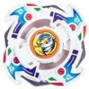

Dragoon F
Note: Since this article was published, significant new and more accurate information has come to light, and as a result, this article must be updated. Please do not take all of the information here as the truth, as more extensive testing on the parts of this Beyblade has since provided information which conflicts with and/or expands upon the understanding of these parts this article was based upon. However, the Overall section has been updated based on this new information, and as such is a reliable source of information. Updates will be posted on the main page when completed.
| Dragoon Fantom | |
|  | |
| Number: | A-25 |
|---|---|
| System: | 5-Layer |
| Type: | Attack |
Contents
Attack Ring (AR): Dual Dragon
- Weight: 6 grams
Dual Dragon can be considered an upgrade of Reverse Dragon (Dragoon S' AR). Like Dragoon S, it has four left-facing projections to provide Smash Attack. The red part of the AR is made of a substance called Dual Carbonate, a particular type of Polycarbonate. This increases the AR's durability; being able to absorb shock from hits more efficiently than regular plastic. However, this AR is outclassed by many other ARs and thus has no competitive use.
Weight Disk (WD): Eight Wide
See Eight Wide
Spin Gear (SG): Left SG
See Left SG.
Blade Base (BB): Fantom Grip Base
- Weight: 6 grams
Fantom Grip Base has a flat rubber tip. Fantom Grip is slightly taller than its predecessor, Storm Grip Base (Dragoon S) and due to increased height and its poorer Stamina, Fantom Grip Base is a less suitable choice for Upper Attack customs compared to Storm Grip Base. Overall, Fantom Grip Base is a less useful BB than Storm Grip Base. In spite of this, it can still be used with mild effectiveness in Smash Attack and Upper Attack customs.
Use in Smash Attack Customization:
- AR: Eight Spiker (Dragoon G)
- WD: Wide Defense
- SG: Neo Right Heavy Metal Core (Metal Driger)
- BB: Fantom Grip Base
Use in Upper Attack Customization:
- AR: Upper Dragoon (Master Dragoon)
- WD: Ten Heavy
- SG: Neo Right Heavy Metal Core (Metal Driger)
- BB: Fantom Grip Base
Other Versions
- Dragoon F - Crystal Version
- Dragoon F - Metal Master Version (Hasbro)
- Dragoon F - Black Version (Sold with a Game Boy Player)
- Dragoon F - Blue Version
- Dragoon F - HyperBlades Version (Orange and Yellow) (Hasbro)
Gallery
Overall
Lacking any truly useful parts aside from its Left Spin Gear, Dragoon F is widely considered a step down from its predecessor, Dragoon S. Unless one is desperate for Left Spin Gear Shells, this Beyblade is only worth buying for collection purposes.